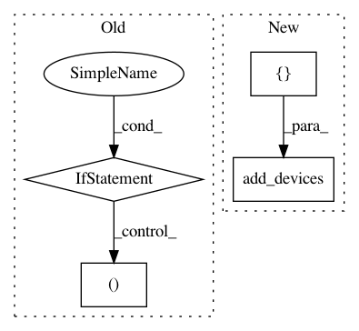

1b54218d465827de39f6ca28745fc536ede64278,homeassistant/components/binary_sensor/zwave.py,,setup_platform,#Any#Any#Any#Any#,36
Before Change
value.set_change_verified(False)
// Make sure that we have values for the key before converting to int
if (value.node.manufacturer_id.strip() and
value.node.product_id.strip()):
specific_sensor_key = (int(value.node.manufacturer_id, 16),
int(value.node.product_id, 16),
value.index)
if specific_sensor_key in DEVICE_MAPPINGS:
if DEVICE_MAPPINGS[specific_sensor_key] == WORKAROUND_NO_OFF_EVENT:
// Default the multiplier to 4
re_arm_multiplier = (zwave.get_config_value(value.node,
9) or 4)
add_devices([
ZWaveTriggerSensor(value, "motion",
hass, re_arm_multiplier * 8)
])
return
if value.command_class == zwave.const.COMMAND_CLASS_SENSOR_BINARY:
add_devices([ZWaveBinarySensor(value, None)])
After Change
return
if workaround.get_device_component_mapping(value) == DOMAIN:
add_devices([ZWaveBinarySensor(value, None)])
return
if value.command_class == zwave.const.COMMAND_CLASS_SENSOR_BINARY:
add_devices([ZWaveBinarySensor(value, None)])
In pattern: SUPERPATTERN
Frequency: 3
Non-data size: 4
Instances
Project Name: home-assistant/home-assistant
Commit Name: 1b54218d465827de39f6ca28745fc536ede64278
Time: 2017-02-07
Author: andrey-git@users.noreply.github.com
File Name: homeassistant/components/binary_sensor/zwave.py
Class Name:
Method Name: setup_platform
Project Name: home-assistant/home-assistant
Commit Name: fae620f3b39e9eb3c9847953d57dd9b4dce5eab0
Time: 2016-10-21
Author: mail@fabian-affolter.ch
File Name: homeassistant/components/binary_sensor/tcp.py
Class Name:
Method Name: setup_platform
Project Name: home-assistant/home-assistant
Commit Name: fae620f3b39e9eb3c9847953d57dd9b4dce5eab0
Time: 2016-10-21
Author: mail@fabian-affolter.ch
File Name: homeassistant/components/sensor/tcp.py
Class Name:
Method Name: setup_platform